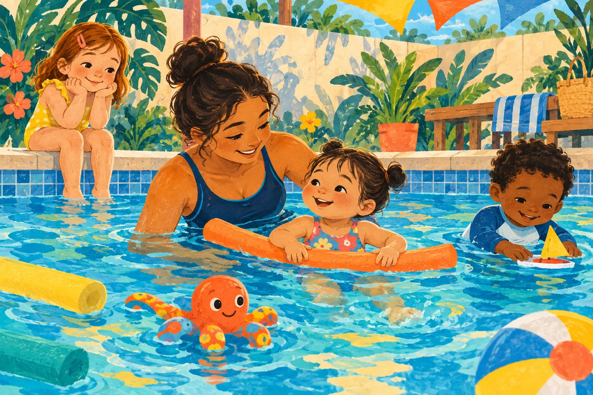
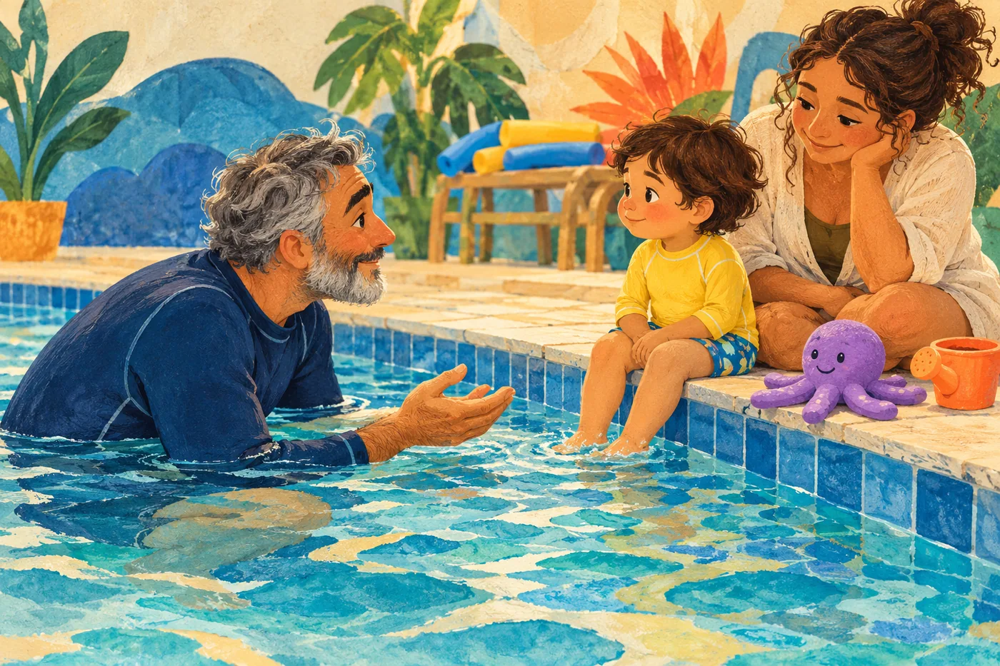
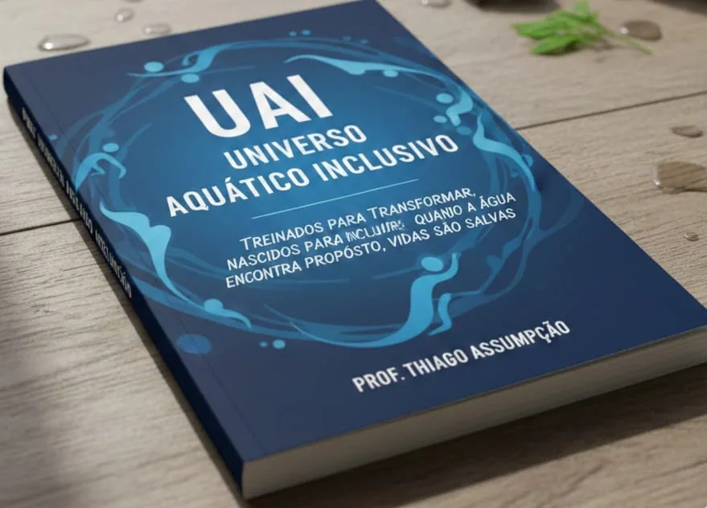

Um mundo novo
para os bebês.
Conhecer a água, explorar sensações e viver as primeiras descobertas aquáticas com acolhimento.
descobrir.Natação infantil & inclusiva
Tem brincadeira, tem acolhimento e tem espaço para ser quem se é. Bem-vindos ao universo do Tio Thiacqua!

Prazer, Tio Thiacqua!
É na conexão com a criança que a aprendizagem começa.
Thiago Assumpção é educador físico, professor e autor. Seu trabalho com natação infantil e crianças neurodivergentes tem um ponto de partida: olhar para cada criança como ela é.
Especialista em neurodesenvolvimento e neurociência, psicomotricista e psicanalista, reúne conhecimento e sensibilidade em sua trajetória na educação aquática.
Para as famílias, Thiago. Para os pequenos, Tio Thiacqua — ou Tio Meleca. Um jeito próximo de compartilhar descobertas dentro d’água.
Conheça mais do meu dia a diaAprender também é brincar
Da primeira aproximação às novas descobertas: um olhar para a infância em suas diferentes formas.
Conhecer a água, explorar sensações e viver as primeiras descobertas aquáticas com acolhimento.
descobrir.A infância pede curiosidade e espaço para aprender. Na água, cada pequena descoberta faz parte da caminhada.
brincar.Acolher diferentes formas de se comunicar, interagir e aprender, respeitando a individualidade.
pertencer.
Inclusão começa com escuta
Nem toda criança chega querendo mergulhar. Algumas observam. Outras precisam se aproximar aos poucos. Há diferentes maneiras de descobrir a água.
O olhar do Tio Thiacqua para a natação inclusiva parte do respeito a essas diferenças e da conexão com a criança.
Sem comparar caminhos.Conte um pouco sobre seu pequeno
Cada descoberta importa.
Conhecimento que acompanha o carinho
Experiências e aprendizados que fazem parte da caminhada do professor Thiago Assumpção.
Mais sobre a formação, os certificados e os encontros pelo caminho.

Da experiência na água para as páginas.
Para quem ensina e acredita na inclusão
Uma direção prática para quem deseja trabalhar com inclusão de forma responsável, estratégica e com propósito.
ou R$ 92 no cartão
Mais conhecimento, mais conexão.Benefícios da pré-venda
Aula “5 Pilares da Natação Inclusiva” ou aula prática com o Prof. Thiago. Escolha no formulário.
O acesso ao grupo faz parte do fluxo da pré-venda. Confira as orientações no formulário.
Antes do próximo mergulho
Para profissionais que trabalham com natação, educação física, terapia ou inclusão e desejam conhecer a proposta do Universo Aquático Inclusivo.
Clique em “Compre na pré-venda”. No Google Forms, preencha os dados solicitados, escolha seu bônus e siga as instruções de pagamento. O formulário pode solicitar login em uma conta Google.
Essas informações são preenchidas no formulário de pré-venda. O site direciona você para esse cadastro.
Confira as orientações no formulário. Para dúvidas sobre prazo, frete ou acesso ao grupo exclusivo, entre em contato com Thiago pelo Instagram antes de concluir a compra.
Vamos conversar?
Conte um pouco sobre seu filho, tire suas dúvidas e conheça o trabalho do Tio Thiacqua.
Conversar com o Tio Thiacquaou procure @thiacqua no Instagram